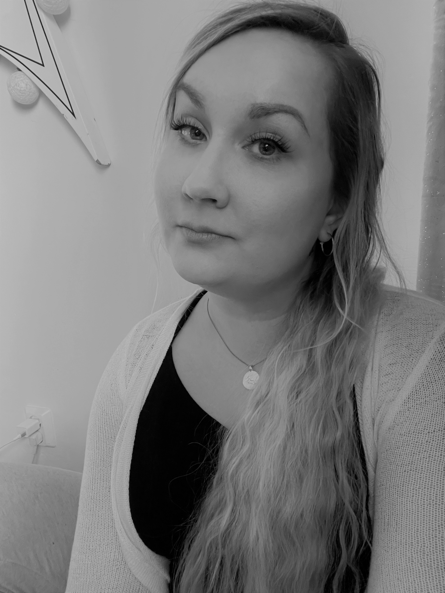

Moikka!
Mie olen Tiia, kolmannen vuoden tieto- ja viestintätekniikan opiskelija Joensuusta.
Opintojeni
lisäksi työskentelen tällä hetkellä myös sovellusvastaavana kuvantamiskeskuksen
toiminnanohjausjärjestelmän tuessa.
Silloin kun mie en ole koulussa tai töissä, niin nautin muun muassa ulkomailla matkustelusta, patikoinnista, piirtämisestä, pelaamisesta, sekä ihan vaan ajan viettämisestä kotona kahden kissani kanssa.
Aikaisemmat koulutukseni ovat pohjautuneet hoitoalaan, ja tovin kerkesinkin sen puolen
töitä tekemään, ennen kuin hain opiskelemaan uutta alaa tietojenkäsittelyn pariin.
Alunperin ajatuksenani olikin löytää valmistumisen jälkeen sellainen työ, jossa voisin myös hyödyntää aikaisempaa osaamistani hoitoalalla, mutta opintojen aikaan olen löytänyt myös monia muita uusia kiinnostuksen kohteita.
Erityisesti mie pidän siitä, kun pääsen käyttämään työssäni luovuutta ja suunnittelemaan sitä
miltä jokin asia näyttää. Opintojeni aikana olenkin löytänyt uusina kiinnostuksenkohteina web-kehityksen, mallinnuksen, animoinnin, sekä pelikehityksen, joiden kohdalla saan keskittyä paljon juurikin visuaaliseen ulkoasuun.
Tällä hetkellä tavoitteenani onkin löytää näistä edellä mainituista eniten se itselleni sopivin juttu, ja tähdätä siihen, että joku päivä pääsisin osaksi työyhteisöä, jossa pystyn oppimaan paljon uutta ja kehittämään taitojani.
Video CV: